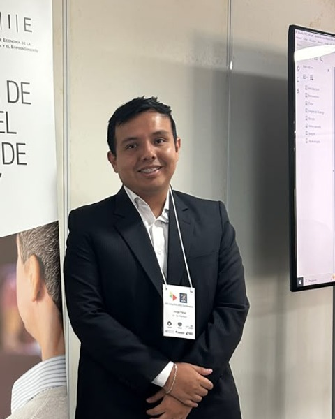

Economist & Researcher
My research examines the relationship between labor market and Artificial Intelligence in developing economies, with a focus on occupational exposure, wage inequality in Latin America. I work at the intersection of labor economics, applied econometrics, and AI policy.

Research
Research interests:
International Journal of Business Environment, 15(3-4), 408–428 · 2024
Journal of Small Business & Entrepreneurship · 2025
360: Revista de Ciencias de la Gestión · 2025
360: Revista de Ciencias de la Gestión · 2025
SSRN · 2025
● Under Review
Sustainable Technology and Entrepreneurship · 2026
● In Progress
Presented at the XVIII Jornadas de Economía Laboral (AEET), Málaga, 2026. Uses ENAHO 2024 microdata, the GBB occupational exposure index, and a Heckman selection model with Bartik shift-share IV to estimate the wage premium associated with GenAI exposure among formal urban workers in Peru.
For a full list of publications, visit my Google Scholar profile.
Conferences
RIE — Red de Economía de la Innovación y el Emprendimiento de América Latina y el Caribe
9th Conference · BID · 2025
Presented two papers: "Exploring the Role of Digital Technology in Coopetition: Insights from Micro and Small Enterprises in an Emerging Economy" and "Automation and Pathways to Product Innovation: An Analysis of Manufacturing Firms in Developed Economies."
APEC-SOM1 (First Senior Officials' Meeting)
Asia-Pacific Economic Cooperation · 2024
With Alejandro Flores and Cathy Rubiños, presented a study on the influence of digitalization on business formalization, based on a survey of entrepreneurs across APEC member economies.
International Association of Jesuit Business Schools (IAJBS)
2021
"Social Innovation and Sustainability Strategies in Firms of Emerging Economies." Study on the relationship between social innovation and business sustainability in an emerging economy.
Academy of International Business – LAC
2021
"Determinants of Social Innovation in Emerging Economies: The Case of Chile." Study using an fsQCA methodological approach on Chilean firm data.
Affiliations
Current Position
DISEL – MTPE Peru
Labor Economist & Researcher
Dirección de Investigación Socio-Económica Laboral
PhD Candidate
UNI-FIEECS
Doctorate in Statistical Science & Engineering (DCIES)
Universidad Nacional de Ingeniería
Master's in Economics
PUCP
Pontificia Universidad Católica del Perú
Advisor: Juan Manuel García Carpio
Undergraduate
UNMSM
Bachelor in Economics
Universidad Nacional Mayor de San Marcos
Contact
I am open to collaboration on research projects related to AI, labor markets, and applied econometrics in Latin America. Feel free to reach out.